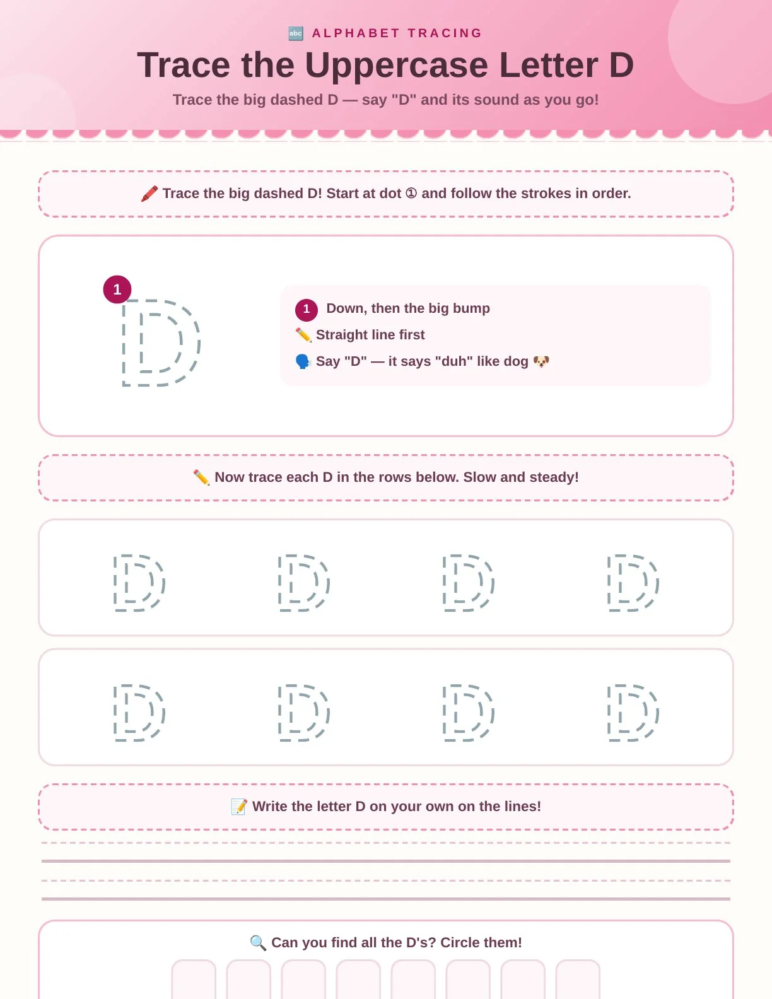

Uppercase Letter D Free Printable Uppercase Letter D Tracing Activity For Kids
Quick Answer
This free printable helps toddlers and preschoolers practice tracing the uppercase letter D — a straight back with one big round belly. The worksheet includes large guided tracing lines, directional arrows, and fun practice rows that teach the shape in two moves: line down, then one big curve around. Download and print at home with no signup needed — perfect for building fine motor skills and letter recognition through hands-on practice.
Capital D is a letter with a big belly — one straight line, one generous curve. This free printable uppercase letter d tracing worksheet gives toddlers and preschoolers a fun, no-prep way to practice that sweep — say the D sound from dog and duck as your child traces, print it at home, and learn the letter D through play.
✏️ Trace The Letter D
Use the printable to help your child trace the uppercase letter D, drawing the straight line first and curving the big belly around it. Practice keeping the belly wide and round — not squeezed flat — and build confidence with early letter formation and writing skills.
Free Uppercase Letter D Tracing Printable

How To Use This Printable
- Download and print the letter D pages on letter-size paper. The print button opens the full-size page in a new tab if you prefer to print from there.
- Say the letter name and sound together before your child starts: “D says /d/, like dog, duck and dinosaur.”
- Trace slowly: line down first, then start back at the top and sweep the belly around in one motion, landing at the bottom of the line.
- Play I-spy with D words around the house — a door, a doll, a dog in a picture book — to lock in the learning.
🔤 All About Capital D
Capital D is a straight line with one big belly. Start at the top and draw the line down to the ground line. Then go back to the top and curve all the way around — out, down, and back to the bottom of the line — in one big sweep. The belly should be round and wide: a squeezed-flat D starts to look like a B with a missing bump.
The letter D makes one clear sound, /d/ — the sound at the start of dog, duck, dinosaur, door and drum. Those are good words to say out loud while your child traces each row.
Capital D has special jobs: it starts sentences, and it begins names of people and places — like the D in Dan and Daisy, and the D in December. Every letter on this page is the big version, so little hands get plenty of practice with that one long curve.
Why Trace Uppercase Letters?
Uppercase letters are usually the first ones children learn to write, and D is the natural next step after B: the same straight line, but one big curve instead of two bumps. That long sweeping curve is serious hand exercise, and it strengthens the hand for every round letter that follows. Every finished D builds fine motor control and early handwriting strength.
🎁 Keep Exploring Free Learning Activities
Discover more printable activities, toddler resources, and learning ideas created for busy parents.
🎁 View All Free Resources❓ Uppercase Letter D Tracing FAQ
Is this uppercase letter D tracing printable really free?
Yes — this uppercase letter D tracing printable is 100% free to download and print at home. No signup and no payment needed. Just tap the download button and print as many copies as you like — the big belly takes a few tries to land smoothly, so print a fresh copy whenever your child asks.
What ages is this printable best for?
It is made for toddlers and preschoolers. Capital D suits beginners who can already draw a straight line: the only other part is one big curve. Little ones can enjoy it with a grown-up’s help, while older preschoolers can work on making the belly round instead of flat by themselves.
How can we practice the letter D at home?
Say the letter’s name and sound — /d/, like dog — each time your child starts a row. Hunt for capital D at the start of names like Dan and Daisy, and at the start of December on the calendar. Keep sessions short and playful — a few each week is plenty.
🔗 More Free Printables You’ll Love
- Free Alphabet Coloring Pages Free printable alphabet coloring pages for little learners.
- Free Lowercase Letter D Tracing Free printable lowercase letter d tracing for little learners.
- Free Uppercase Letter E Tracing Free printable uppercase letter e tracing for little learners.
- Free Uppercase Letter F Tracing Free printable uppercase letter f tracing for little learners.